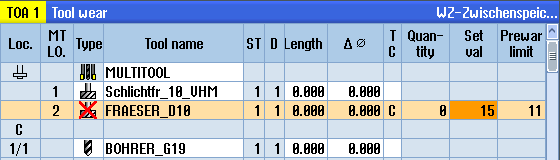

Multitool and tools located on the multitool can be disabled independently of one another.
If a multitool is disabled, then the tools of the multitool can no longer be changed in using a tool change.
If only one tool on a multitool has a set monitoring function and the lifetime or the unit quantity has expired, then the tool and the multitool on which the tool is located are disabled. The other tools on the multitool are not disabled.
| | Machine manufacturer Please observe the information provided by the machine manufacturer. |
If several tools with monitoring are mounted on the multitool and the lifetime or unit quantity has expired for one tool, then only this tool is disabled.
Reactivating
If a tool with expired lifetime or unit quantity that is mounted on a multitool is reactivated, then for this tool, the lifetime/unit quantity is set to the setpoint and the tool and the multitool are re-enabled (disable status is removed).
If a multitool is reactivated, on which tools with monitoring are mounted, then the lifetime/unit quantity for all tools on the multitool are set to the setpoint no matter whether the tools are disabled or not.
Requirements
In order to reactivate a tool, the monitoring function must be activated and a setpoint must be stored.
Procedure

Reactivating and positioning
When the "Reactivate with positioning" function is configured, then also the magazine location at which the selected multitool is located is positioned at the loading point. You can exchange the multitool.
Reactivation of all monitoring types
When the "Reactivation of all monitoring types" function is configured, all the monitoring types set in the NC for a tool are reset during reactivation.
| | Machine manufacturer Please observe the information provided by the machine manufacturer. |